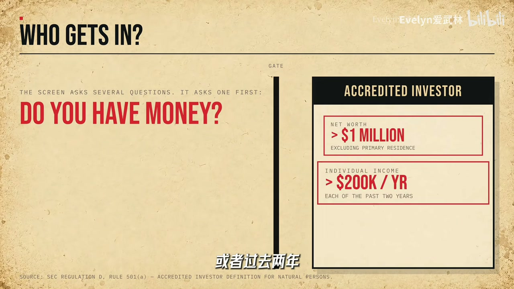

内容要点
私募池变大→支票变大→员工/早期投资人退出不一定靠 IPO；公开市场买到的是更晚更大的切片。Nasdaq Private Market、份额转让与 S 基金尝试降低私人俱乐部的摩擦。
知识结构
上市年龄翻倍；单轮融资体量暴涨；七年后 IPO 比例骤降。
低利率逼养老金进私募；退出与融资墙可被私募解决。
散户买巨无霸；NPM/S 基金等补私募流动性。
不是散户突然变笨，而是优质成长阶段被私募提前分走；看懂 IPO 变晚，才能看懂「能买时已经很贵」。
00:00-03:00从迷你上市到巨无霸上市
对照：苹果上市约 4 年估值 12 亿量级，微软约 11 年数亿，亚马逊约 3 年；今日 SpaceX 成立二十多年估值已近天文数字却仍可不急 IPO。美国 IPO 中位年龄约从 6 岁到 12 岁翻倍。
私募与公开的分界沿 IPO 展开：1999 年 Google 融 2500 万是新闻，如今单轮过亿、OpenAI 单轮可达千亿级融资。1994 年那批创业公司七年后约 1/4 已 IPO，2009 年那批七年后约 2%；没被淘汰的公司继续融，只是不急着上市——成长更多发生在上市前。
03:00-08:00另类资产、低利率与 JOBS 法案
没有 IPO 也能变现与再融资：私募股权、信贷等另类资产吸引养老金、捐赠基金、保险与主权基金。危机后利率趴地，债券回报薄，资金往预期回报更高、流动性更差的私募迁徙；美国公共养老金配置私募的规模数十年间跃升。
资金池变大则支票变大：从前撞上的「VC 没钱了 / 员工要变现 / 早期投资人要退出」三堵墙，现在私募与成长基金、乃至法规都能缓冲。2012 JOBS 法案把触发 SEC 注册的股东人数门槛大幅提高，公司可以 private 更久——少了公开市场麻烦，也形成「越不上市→私募成长越多→机构越必须配」的循环。
08:00-13:30买到巨无霸，以及私募市场基建
对普通人：等能在交易所买时，弹性成长可能已被私募定价走一大截——不是单纯「散户变穷」的道德故事，而是准入与支票大小的结构问题。于是有人搭私募流动性：Nasdaq Private Market 做员工邀约、私募二级与价格发现，累计服务大量项目与数百亿美元交易；一批创业公司也在做渠道/金额/流动性。
中国合格投资者门槛高，更先解决的是退出：私募股权二级与 S 基金、北交所与上海份额转让试点，成交笔数与金额在累积。私人俱乐部玩法开始不够用，基础设施正在补课。

完整转录（209段）
Whisper 转录含口播英中混杂与口误；已校正 JOBS 法案、Nasdaq Private Market、S 基金/份额转让等。部分访谈片段嘈杂，语义以旁白主线为准。
我是個職業做股票的
要說蘋果 微軟這些公司上市的時候
也不能說是什麼小卡拉米
但跟今天比確實有點迷你
蘋果上市的時候成立4年估值12億
微軟11年5個多億
亞馬遜更狠
成立3年就上市了估值4個億
Google算完的6年230個億
然後SpaceX成立24年估值接近2萬億
怎麼它IPO就已經這麼大了
還需要我的錢
而且不只是SpaceX
1980年美國公司IPO時的中位數年齡
大概6歲
2025年12歲 翻倍
你看 一家公司IPO之前
股票還沒有在交易所公開買賣
我們就把這一段叫做私募市場
IPO以後大家可以在紐交所
納斯達克等股票交易所直接買賣
就是公開市場
那嚴格的金融分類當然更要複雜一點
但今天我們就先沿著IPO這條線看
記得1999年的時候
Google融了2500萬美元
當時可算特大新聞
還專門發了新聞稿
到了現在
美國單輪超過1億美元的VC融資
477輪
超過10億美元的25輪
OpenAI最新一輪
1200多億
你沒聽錯
不是估值
是一輪融資
以前一家公司要這麼多錢
差不多該準備上市了
現在 不用
1994年那批
第一次拿到VC的前的創業公司
7年以後
四分之一已經IPO了
到了2009年那一批
7年以後
100家公司里
也就2家上市
嗯
這些沒有被淘汰的公司
也沒有停止融資
他們只是不著急上市了
所以整個資本市場的玩法變了
越來越多的成長
開始發生在上市之前
等它終於來到股票市場
咱們都能買的時候
就已經是個巨無霸了
我現在更想知道的是
不上市
她為什麼還在這
我已經在這了8年
我可以賣出我的股票嗎
我們做個軟股的贊助
所以沒有IPO
這裡是你的利潤
回到工作
嗯
50億就這麼湊齊了
現在美國的私募市場
可早就不止有風險投資了
後面還有養老金
大學捐贈基金
保險公司
主權財富基金等等
過去20多年
全世界最大的這些長期私池
一直在增加一類投資
私募股權
風險投資
私募信貸等等
統稱
另類資產
那為什麼呢
一個很重要的背景就是利率
2008年金融危機之後
全球利率在地板上趴了十幾年
養老金這麼大的資金池
不可能就放在那裡
它得賺錢呢
偏偏債券給的回報又越來越薄
那怎麼辦呢
那就往外找唄
風險高一點
流動性差一點
但是
預期回報率也高yeong
2001年美國公共養老金
總共放在私募市場里的資產
大概只有790億美元
而到了2023年
因為公開市場股票
公司上市前融資的資金池越來越大了
資金池一變大
支票也就變大了
那從前
一家公司漲到一定階段會撞上幾堵牆
雲西說
我沒有這麼多錢了
那員工說
我的股票
什麼時候才能變現呢
那早期投資人說
那我也想退出啊
怎麼辦呢
IPO
那現在呢
私募股權
成长基金
主權財富基金一起上
那甚至連法規都給了公司更多的時間
2012年JOBS 法案
把公司因為股東人數太多
而觸發SEC註冊的門檻
從原來的500人
提高到了最高2000名登記股東
那什麼意思呢
就是公司可以Private更久了
那所以
以前很多必須靠IPO解決的問題
現在
不IPO也能解決
那創始人還少了很多公開市場的麻煩
而這件事還有點雞生蛋單生雞的感覺
公司呆在私募市場越久
越多成長發生在里面
那越多成長發生在里面
這些大機構就越不能不投
不然Alpha都讓別人拿走了
你拿不出這麼大一張支票
這個世界最不缺的就是點子
既然私募市場越來越大
又有這麼多人想進去
那一定有人會想
那這套遊戲能夠進去嗎
我看
公司不可能
你沒看過
你沒看過
你沒看過
你沒看過
你沒看過
你沒看過
你沒看過
你沒看過
你沒看過
你沒看過
你沒看過
你沒看過
你沒看過
你沒看過
你沒看過
你沒看過
你沒看過
能不能换 início玩法
还真有人在做
比如大家都知道的纳斯达克
更准� cordial一点是Nasdaq Private Market
他现在已经是一家独立的公司
但纳斯达克还是重要的股东
他干的事情就是给没上市的公司
慢慢搭一套更像市场的基础设施
那员工想卖股票可以做邀约交易
老股东想退出可以做私募二级交易
连这个公司到底值多少钱都说不清
那就做竞价 做价格发现
那一直到现在他已经帮1000个项目提供过流动性
累计交易金额超过了800亿美元
所以你看纳斯达克已经发现了
IPO之前这十 Digital Economy 几年也得有个市场
而且当然不止是他
现在美国还有一大批新公司
都在想办法zione这件事
本质上解决的还是我们前面提到的那几个问题
渠道、金额、流动性
那中国呢 其实也在动
中国对私募市场的合格投资者要求也很严
个人投资私募基金
通常不仅要满足资产或者收入门槛
单支基金的投资金额一般还不能低于100万元
所以呢 中国目前更先解决的是另外一个很现实的问题
怎么退出啊
比如 一支私募基金投了八年十年项目还没上市
那怎么办呢
这几年越来越成熟的一个办法就是
私募股权二级市场和S 基金
那简单的说 你的份额啊 卖给我
北京股权交易中心
已经在做股权投资和创投基金份额转让试点了
那上海有自己的私募股权和创业投资份额转让平台
那截至2026年
上海这个平台累计成交了近200笔基金份额
交易金额呢 大概346亿人民币
所以你看 大家都看到了同一个变化
私募市场是越来越大了
大到以前那套非常封闭 非常人工
非常靠关系的玩法 开始有点不够用了
那现在至少啊 这个私人俱乐部到底该怎么改
已经有人开始动手了